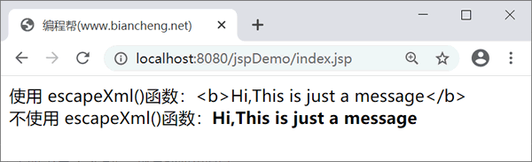

fn:escapeXml()函数
JSTL fn:escapeXml 函数用于转义 HTML/XML 中的字符，也就是将 HTML/XML 标签看作字符串，类似于 <c:out> 标签中的 escapeXml 属性。
运行结果为：
语法
JSP fn:escapeXml 函数语法如下。String escapeXml(String input_string)其中，input_string 用于指定字符串。
示例
下面为 fn:escapeXml 函数的简单实例。
<%@ page language="java" contentType="text/html; charset=UTF-8"
pageEncoding="UTF-8"%>
<%@ taglib uri="http://java.sun.com/jsp/jstl/core" prefix="c"%>
<%@ taglib uri="http://java.sun.com/jsp/jstl/functions" prefix="fn"%>
<!DOCTYPE html>
<html>
<head>
<title>编程帮(www.biancheng.net)</title>
</head>
<body>
<c:set var="str" value="<b>Hi,This is just a message</b>" />
使用 escapeXml()函数：${fn:escapeXml(str)}
<br>
不使用 escapeXml()函数：${str}
</body>
</html>
运行结果为：

关注公众号「站长严长生」，在手机上阅读所有教程，随时随地都能学习。内含一款搜索神器，免费下载全网书籍和视频。

微信扫码关注公众号